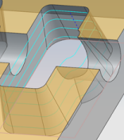
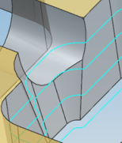
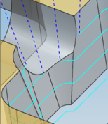
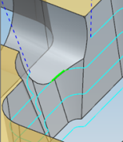
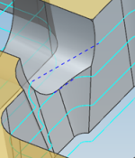

Contour Profile wall gap handling
What is it?
NX now generates cuts that follow the trimmed portions of the wall. In previous releases, cuts that lost contact with the wall would create a poor quality tool path.
|
 |
|
|
NX 8.5 |
Previous releases |

New Across Wall Gaps options are available. Use these options to control the tool path behavior across wall gaps in the following ways:
-
Specify Extend Distance values to extend the start or end of cuts.
-
Set the Motion Type option to Cut or Stepover. The Stepover motion lets you apply a faster feed rate.
-
Specify a Minimum Distance value to control when NX applies the traverse move for within regions. The Non Cutting Moves cycle can be more efficient for large wall gaps.
The following diagram illustrates the Across Wall Gaps options.
|
Wall gap with start and end of cut extensions
|
1: Start of cut extension 2: Wall cut 3: End of cut extension |
4: Wall gap: Cut or Stepover motion 5: Minimum Distance to be considered 6: NCM cycle to traverse the gap |
Examples
|
 Motion Type = Cut |
Motion Type = Stepover |

|
 Motion Type = Cut Minimum Distance = 100 |
 Motion Type = Stepover Minimum Distance = 0.5 |
 Motion Type = Cut Minimum Distance = 0.0 |
|
Traverse Type = Clearance |
Traverse Type = Clearance |
Traverse Type = Direct |
Where do I find it?
|
Application |
Manufacturing |
|
Prerequisite |
Contour Profile operation |
|
Location in dialog box |
Contour Profile operation dialog box→Drive Method group→Edit
|